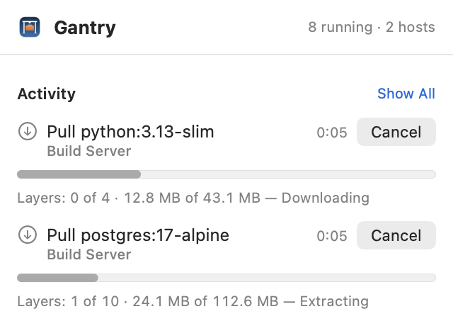

Mac-appen för Apple container och Docker
Gantry är en gratis Mac-app med öppen källkod för Apples container-verktyg och för Docker, lokalt och via SSH. Kör containrar, Kubernetes-kluster, maskiner och Compose-projekt på apple/container i ett fönster, bredvid dina Docker-värdar. Ett gratis alternativ till Docker Desktop och OrbStack för Mac.
Gantry 0.29.0 · macOS 26+ · Apple-chip & Intel · MIT-licens · 28 språk · MCP-server ingår

Från kommando till reglage
Apples container-verktyg och Docker är kommandoradsverktyg. Varje kommando i tabellen har ett reglage i Gantry.
- container
- docker
- docker compose
- kubectl
| Kommando | I Gantry |
|---|---|
container run, container create | Arket Ny container och Snabbkörning: image, namn, kommando, portar, miljö, volymer, DNS-domän, anpassad kärna och startargument; Klistra in kommando… läser en docker run- eller container run-rad |
container start, stop, kill, delete, prune | Verktygsfältet, högerklicksmenyn och panelen i menyraden |
container logs | Fliken Loggar: följ i realtid, regex-sökning, nivåfilter, ANSI-färger; Exportera loggar… sparar de synliga raderna |
container stats | Fliken Statistik, minidiagrammen i översikten över flottan och tabellen Resursanvändning |
container exec | Fliken Terminal (interaktivt skal) och fliken Processer |
container inspect | Flikarna Översikt och Granska; Exportera som Compose… gör om konfigurationen till en Compose-fil |
container copy | Fliken Filer: ladda ned och dra ut till Finder (containern måste vara startad) |
container image pull, tag, delete, prune, inspect | Images: hämta med förlopp, tagga, ta bort, rensa, granska; Sök efter sårbarheter… med Trivy eller Grype |
container build | Bygger build:-tjänsterna i en Compose-fil; avsnittet Byggen listar de byggen som Gantry har startat |
container machine create, run, stop, delete, set-default, set, inspect | Maskiner: skapa, starta, stoppa, radera, standardmaskin, CPU:er och minne, skal, granska, Öppna i VS Code |
container cluster create, list, delete, write-config, load-image | Kluster: Kubernetes-kluster, worker-storlekar och delat image-lager (1.7), noder, kubeconfig, Bläddra bland resurser, Läs in i kluster (1.5 och 1.6) |
Inget compose-kommando | Compose-körning: starta en docker-compose.yml från Finder, Arkiv-menyn eller med dra och släpp |
Containrar
Skapa, kör, öppna och ändra containrar på varje värd.
- container run
- docker exec -it
- docker cp
- docker port
- Klistra in en
docker run - Klistra in ett
docker run-,podman run- ellercontainer run-kommando så fyller Gantry i formuläret Ny container, med en lista över de flaggor den inte kan använda. Kopiera valfri container tillbaka som kommando, eller spara den som recept. Så fungerar det - Inbyggd exec-terminal
- Fullständig terminalemulering i alla containrar som körs, lokalt eller på distans – med färgteman (System, Solarized, Dracula, Nord).
- Filbläddrare med dra och släpp
- Bläddra i en containers filsystem, flytta filer in och ut och släpp hela mappar direkt från Finder – på både Docker- och apple/container-värdar.
- Öppna i webbläsaren & vidarebefordra
- Ett klick öppnar en publicerad port. SSH-portar tunnlas automatiskt till
localhost– och om porten är upptagen väljer Gantry en ledig som du kan ändra. - Dela på internet
- Ett klick gör en publicerad port nåbar via en Cloudflare Tunnel. Gantry installerar
cloudflaredåt dig och ger sedan en snabbtunnel (inget konto, en URL under*.trycloudflare.com) eller en namngiven tunnel på din egen domän – perfekt för en förhandsversion, en webhook eller för att låta en AI-agent nå en container på din Mac. - Hemligheter från nyckelringen i miljön
- Spara lösenord och tokens i nyckelringen i macOS (Inställningar → Hemligheter) och använd dem som miljövariabler i Ny container och Snabbkörning. Formuläret visar
keychain:NAME, aldrig värdet, och Gantry läser värdet först när den skapar containern. Compose-export, recept och Kopiera som kommando skriver namnet, inte värdet. - Hantera många på en gång
- Markera flera containrar, images, volymer eller nätverk och starta, stoppa, starta om eller ta bort dem i ett steg, med förlopp och en rapport för varje objekt.
- Statistik i realtid
- CPU, minne, nätverk & disk-I/O i diagram live, med mätning varje sekund.
- Containrar på en extern disk
- Flytta all data i apple/container till en extern disk, lägg volymer på valfri disk och få en tydlig varning när disken inte är ansluten. Läs guiden

Images och byggen
Hämta, bygg, sök igenom och ta bort images.
- docker build
- docker pull
- trivy image
- docker system prune
- Bygg & hämta images
- Släpp en Dockerfile på fönstret för att bygga med logg i realtid, eller hämta via referens med förlopp per lager. Tagga, rensa och läs lagerhistorik. Ett märke visar images som är byggda för en annan CPU-arkitektur än värdens.
- Bygghistorik
- Varje värd har ett avsnitt Byggen: byggena med sina steg, cacheträffar och logg. Gantry sparar de byggen som den startar, med namnen på byggargumenten men inte deras värden. På Docker-värdar läser den även
docker buildx history(buildx 0.23.0 eller senare). apple/container sparar ingen bygghistorik, så där ser du de byggen som Gantry har startat. - Sök igenom images med Trivy eller Grype
- Välj Sök efter sårbarheter… på en image. Gantry kör den Trivy (0.50.0 eller senare) eller Grype (0.74.0 eller senare) som du har installerat, till exempel med Homebrew, och grupperar fynden från Kritisk till Okänd. Exportera SBOM skriver CycloneDX, eller SPDX med Trivy. Det fungerar på apple/container, lokal Docker och Docker via SSH, där Gantry söker igenom registrets kopia av en taggad image.
- Privata register
- Hämtningar använder den
docker logindu redan har gjort – Gantry hämtar inloggningsuppgifter från~/.docker/config.json, credential helpers och nyckelringen, både när du skapar en container, i Snabbkörning och i Compose. - Frigör utrymme
- En panel visar vad som tar plats – otaggade images, stoppade containrar, oanvända volymer, byggcache – med storlekar, och rensar var för sig eller allt på en gång. På apple/container kör den även Trimma disk.
Compose
Kör en docker-compose.yml på Docker eller på apple/container, och skapa en från containrar som körs.
- docker compose up -d
- docker compose down
- docker compose logs -f
- Compose på varje värd
- Containrar grupperas efter sitt Compose-projekt. Starta en Compose-fil på valfri värd – lokal Docker, SSH eller apple/container – med en inbyggd YAML-redigerare; körningen anpassas efter motorn.
- Exportera som Compose
- Välj Exportera som Compose… på en eller flera containrar för att få en
docker-compose.ymlmed portar, monteringar, nätverk, omstartspolicy, hälsokontroll, gränser med mera. Värden som liknar hemligheter blir${NAME}om du inte tar med dem. På apple/container-värdar varnar Gantry för de flaggor som Compose inte kan uttrycka. Så fungerar det
Kubernetes
Bläddra i varje kubeconfig-kontext, eller skapa ett kluster med apple/container.
- kubectl get pods -A
- kubectl logs -f
- kubectl port-forward
- container cluster
- Kubernetes-utforskare
- Bläddra bland poddar, deployments, stateful sets, daemon sets, services, ingresses, config maps, secrets, noder och händelser i valfri kubeconfig-kontext. Följ poddloggar, öppna ett skal, vidarebefordra en port, skala, starta om en utrullning och verkställ YAML. Gantry pratar själv med Kubernetes-API:et, så ett kluster som skapats med
container cluster creategår att bläddra i utan att något annat installeras: ingetkubectl. - Kubernetes-kluster
- Skapa ett Kubernetes-kluster med
container cluster: ange storlek för kontrollplanet och dina workers var för sig, välj CNI och se noderna, Kubernetes-versionen och kubeconfig-kontexten. Klusternoder är låsta mot att stoppas och raderas av misstag. Läs mer

Värdar och flotta
Den här Macen, Docker-värdar via SSH och apple/container i en översikt.
- docker -H ssh://user@host
- docker context use
- docker stats
- En översikt för alla värdar
- Lokal daemon, SSH-flotta och apple/container på en skärm – minidiagram för CPU och minne i realtid, fördelning av containerstatus och hälsoproblem som tar dig direkt till boven.
- Fjärrvärdar via SSH
- Tunnlar precis som
docker -H ssh://viadial-stdio– ProxyJump-bastioner, autentisering med flera nycklar, automatisk återanslutning. Inget att installera på servern, hemligheterna i nyckelringen. Importera med ett klick från~/.ssh/configochdocker context ls. - Resursanvändning för alla värdar
- En sorterbar tabell med de containrar som körs på varje ansluten värd: värd, namn, image, CPU, minne, nätverks-I/O, disk-I/O och drifttid. Filtrera på namn, image eller värd, eller visa en värd. Dubbelklicka på en rad för att öppna containern. Tabellen använder de mätvärden som Gantry redan tar var 5:e sekund, så den öppnar inga nya statistikströmmar. Öppna den från sidofältet, med ⌘K eller med
gantry://open/usage.


Loggar och fel
Läs, sök i och exportera loggar. Hitta orsaken när en container misslyckas.
- docker logs -f
- container logs
- docker events
- Loggar i realtid
- Följ i realtid, sök med regex eller ordagrant med ⌘F, ett nivåfilter (Error→Trace), ANSI-färger, en buffert på 50 000 rader – och sammanslagna stackloggar för ett helt Compose-projekt.
- Exportera loggar
- Exportera loggar… (⇧⌘E) sparar de rader som du ser, med nivåfiltret, sökningen och tidsintervallet, som en
.log- eller.txt-fil. Kopiera synliga rader kopierar dem. På Docker-värdar kan du lägga till tidsstämplar och visa bara de senaste 5 minuterna upp till det senaste dygnet. - Notiser vid fel
- En inbyggd notis när en container kraschar, får slut på minne eller inte längre är frisk på någon värd. Klicka på den för att gå direkt till containern – stopp som du gör själv rapporteras inte.
- Förklara fel med Apple Intelligence
- Välj Förklara fel… för en krashad container eller en misslyckad åtgärd. Gantry skickar senaste loggar och uppgifter, utan miljövärden och utan text som liknar hemligheter, till modellen på enheten och visar den troliga orsaken, beläggen och nästa steg. Långa loggar kan gå till Private Cloud Compute (macOS 27). Panelen visar exakt vad som skickades.
- Skärmbilder i ”Förklara fel”
- Släpp, klistra in eller lägg till upp till 3 bilder i ”Förklara fel”, till exempel en skärmbild av en felsida. Bilderna stannar på den här Macen: bara modellen på enheten läser dem (macOS 27), aldrig Private Cloud Compute.

macOS
Menyraden, notiser, Spotlight, Genvägar och tangentbordet.
- ⌘K
- ⌥⌘P
- ⇧⌘E
- En del av macOS
- Notiser med Starta om, Visa loggar och Kopiera som prompt. Spotlight hittar containrar, Compose-projekt och värdar. Åtgärder för Siri och Genvägar, en widget för flottans hälsa, reglage i Kontrollcenter för apple/container-tjänsterna eller en favoritcontainer, och
gantry://-länkar för skript. - Förlopp i menyraden
- Panelen i menyraden visar varje hämtning, bygge och Compose-åtgärd som pågår med en förloppsindikator, de lager eller tjänster som är klara, byten, tiden och en Avbryt-knapp. Symbolen i menyraden visar hur många åtgärder som pågår. Varje Compose-projekt får Hämta avbilder och Compose Down; Compose Down behåller volymer och images.
- Kommandopalett
- Tryck på ⌘K och skriv. En sökning täcker containrar, Compose-projekt, images, volymer, nätverk, maskiner, kluster och värdar, med åtgärder som Starta, Visa loggar och Öppna skal.
- Touch ID för destruktiva åtgärder
- Slå på funktionen så ber Gantry om Touch ID – eller ditt inloggningslösenord – innan en container tas bort eller en värd raderas. Hemligheterna ligger redan i nyckelringen.
- Terminalteman
- Klä det inbyggda skalet i System, Solarized Dark, Dracula eller Nord – en komplett palett för förgrund, bakgrund och 16 ANSI-färger, som tillämpas direkt.

Det inbyggda macOS-GUI:t för Apple container
Apples container-verktyg kör Linux-containrar som lätta VM:ar på Apple-chip, men levereras bara som ett kommandoradsverktyg. Gantry är skrivbordsappen för det: det Docker Desktop är för Docker är Gantry för container. Den stöder varje container-CLI från 1.0 upp till den rekommenderade 1.7.1 och slår på varje funktion först när ditt installerade CLI stöder den.
- container system start
- container machine
- container builder start
- container registry login
- Containrar, loggar, statistik och exec
- Skapa, starta, stoppa, tvångsavsluta och rensa; loggar och statistik i realtid, en exec-terminal,
topoch tar-export, i samma gränssnitt som dina Docker-värdar. - Kubernetes-kluster
- Skapa ett Kubernetes-kluster med
container cluster: ange storlek för kontrollplanet och dina workers var för sig, välj CNI och se noderna, Kubernetes-versionen och kubeconfig-kontexten. Klusternoder är låsta mot att stoppas och raderas av misstag. Läs mer - Lokala images i klustret
- På CLI 1.7 slår du på Använd lokala images (
--shared-image-store), så kör poddarna de images du bygger eller hämtar, utan register. På CLI 1.5 och 1.6 högerklickar du på en image och väljer Läs in i kluster. - Tydliga tips när installationen är trasig
- Om klustertjänsterna inte svarar berättar Gantry varför. Ett Homebrew-bygge utan klustertjänsterna får en länk till det signerade installationsprogrammet; allt annat får knappen Starta om tjänster.
- Containermaskiner i VS Code
- Skapa, starta och stoppa Linux-miljöer med
container machine, ställ in CPU:er och minne, öppna ett skal eller öppna maskinen i VS Code via Remote-SSH. - Nästlad virtualisering och anpassade kärnor
- Starta en maskin med nästlad virtualisering (M3 eller nyare) eller din egen kärna. Starta containrar från en anpassad kärna med extra startargument.
- Compose för Apple container
- apple/container har inget
compose. Gantry kör dindocker-compose.yml: den bygger, skapar nätverket och volymerna och startar tjänsterna idepends_on-ordning. Tjänstnamn slås upp via nätverks-DNS-alias. - Nätverks-DNS-alias
- Containeralias, underträdsalias som
.gatewayoch korta namn när en standard-DNS-domän är inställd. Varje container får en routbar IP-adress och ett värdnamn av typenname.domain. - Hantera image-byggaren
- Se byggarens status, image, CPU:er, minne och IP-adress. Starta den med alternativ för CPU, minne och DNS, stoppa den eller radera den. När byggarens image är inaktuell erbjuder Gantry att skapa om den.
- Registerinloggningar
- Lista, lägg till och ta bort inloggningar med
container registry. Lösenordet går bara till CLI:et via stdin, och Gantry sparar ingen kopia. - Installera kärna
- Installera den rekommenderade kärnan, en kärnfil eller ett tar-arkiv och följ förloppet live. Gantry varnar dig när ingen standardkärna är installerad.
- Tjänster och tjänsteloggar
- Starta, stoppa och starta om
container-tjänsterna, jämför klient- och serverversion och strömma tjänsteloggar filtrerade på nivå, tjänst och text. - Redigerare för systemegenskaper
- Redigera systemegenskaperna för
containericonfig.toml. Gantry markerar de ändringar som kräver omstart och startar om tjänsterna åt dig. På CLI 1.7 redigerar den också standardvärdena i[container.dns]: namnservrar, sökdomäner och alternativ. - Commit och Trimma disk
- Spara en container som image (
container commit) och frigör diskutrymme med Trimma disk (container clean), även i panelen Frigör utrymme. - Filbläddrare: ladda upp och ned
- Bläddra bland en containers filer, ladda ned dem eller dra ut dem till Finder (
container copy), och släpp in filer eller hela mappar. - Snabbkörning och Finder
- Välj en image, dela en mapp, mappa portar och välj en domän – sedan kör du. Högerklicka på en Compose-fil i Finder och öppna den med Gantry.
- Etiketter som innehåller
= container-CLI:et avvisar etikettvärden med=. Gantry kodar dem när containern skapas och avkodar dem vid läsning, så ett värde soma=bförblir intakt.- En flotta, två körmiljöer
- apple/container-värdar ligger bredvid dina lokala Docker- och SSH-värdar i en och samma översikt, med samma minidiagram, hälsostatus och felnotiser.
- MCP-verktyg för agenter
- Den inbyggda MCP-servern ger agenter samma räckvidd: containrar, maskiner, kluster och
apple_*-systemverktyg för tjänster, byggare, register, egenskaper, loggar och kärnor.
Agenter
En inbyggd MCP-server och App Intents ger Claude, Genvägar, Siri och skript tillgång till alla värdar – även SSH-värdar – med samma räckvidd som GUI:t: skapa och hantera containrar, bygga och hämta images, volymer och nätverk, Compose up, apple/container-maskiner och Kubernetes-kluster, apple_*-systemverktygen för tjänster, byggare, register och kärnor, och till och med dela en port via en Cloudflare Tunnel.
- claude mcp add gantry
$ claude mcp add gantry -- \
/Applications/Gantry.app/Contents/Resources/gantry-mcp
✓ MCP-server tillagd gantry
- Kopiera som prompt
- Tryck ⌥⌘P på valfri container så lägger Gantry en färdig felsökningsprompt i urklipp – värden och hur den nås, MCP-
host_idoch verktyg, containerns fullständiga status och en uppgift anpassad efter symtomet. - MCP-verktyg för agenter
- Den inbyggda MCP-servern ger agenter samma räckvidd: containrar, maskiner, kluster och
apple_*-systemverktyg för tjänster, byggare, register, egenskaper, loggar och kärnor.
Versioner
- 0.29.0 · 0.28.0Hela flottan i en tabell, och säkrare imagesGantry 0.28.0 och 0.29.0 lägger till en aktivitetstabell för alla värdar, en bygghistorik, sårbarhetssökning i images med Trivy eller Grype, hemligheter från nyckelringen för containerns miljö och en export till Compose. Du kan exportera loggar med ditt filter, ge ”Förklara fel” en skärmbild och följa hämtningar, byggen och Compose-körningar i menyraden.
- 0.27.0Kubernetes, Apple Intelligence och resten av macOSGantry 0.27.0 lägger till en Kubernetes-utforskare, förklarar misslyckade containrar med Apple Intelligence och fungerar med Spotlight, Siri, widgetar och Kontrollcenter. Den stöder apple/container 1.7.1 och har en ny design som följer Apples Human Interface Guidelines.
Uppbyggnad
Gantry pratar med Docker Engine-API:t och med Apples container-CLI. Den kör ingen egen tjänst.
- 100 % inbyggd SwiftUI
- Inbyggd SwiftUI, inte Electron. Appen använder reglagen, typsnittet och fönstren i macOS.
- Swift 6
- Modern kodbas med säker samtidighet, byggd med den senaste verktygskedjan.
- Direkt mot Engine-API:t
- Docker via Unix-socketen, inget Docker-CLI behövs. apple/container via sitt eget
container-CLI. - Automatiska uppdateringar
- En EdDSA-signerad Sparkle-appcast håller appen uppdaterad utan att störa dig.
Installation
Hämta appen eller installera den med Homebrew. Du behöver inget konto.
- brew install --cask getgantry/tap/gantry
- InstalleraKör Homebrew-casken, eller hämta
.zip-filen från Versioner och draGantry.apptill Program. - Första startenInte notariserad än – högerklicka & välj Öppna, eller ta bort karantänen med
xattr -dr com.apple.quarantine /Applications/Gantry.app - Lägg till en värdLokal Docker dyker upp av sig själv. För Apple container lägger du till en Apple Container-värd; Gantry erbjuder att installera
container-CLI:et. Agenter:claude mcp add gantry.
Frågor
Vilket är det bästa GUI:t för Apple container?
Gantry är ett gratis, inbyggt macOS-GUI med öppen källkod, gjort för Apples container-verktyg (apple/container). Det täcker containrarnas livscykel, loggar, statistik och en exec-terminal, plus de delar av CLI:et som andra GUI:n inte når: Kubernetes-kluster (container cluster), container-maskiner, image-byggaren, registerinloggningar, kärnor, tjänstloggar och systemegenskaper. Det stöder CLI 1.0 till 1.7.1 och slår på varje funktion först när ditt CLI stöder den. Se guiden till apple/container.
Vad är Apple container (apple/container)?
apple/container är Apples verktyg med öppen källkod för att köra Linux-containrar på en Mac. Varje container körs i en egen lätt virtuell maskin, byggd på Apples Virtualization-ramverk. Det kräver en Mac med Apple-chip och levereras som ett kommandoradsverktyg som heter container, utan skrivbordsapp. Gantry är den skrivbordsappen.
Stöder Gantry container cluster och Kubernetes?
Ja. På en apple/container-värd skapar och raderar Gantry Kubernetes-kluster med container cluster (CLI 1.6.1 och 1.7; CLI 1.5.0 till 1.6.0 använder container k8s). Du väljer namn, workers, CPU:er och minne för kontrollplanet och för dina workers (1.7), nodimage, CNI och om noderna ska använda dina lokala images (1.7). Gantry visar noderna, skriver kubeconfig och öppnar klustret i sin Kubernetes-utforskare. Se Kubernetes på apple/container.
Kan jag använda docker compose med Apple container?
Ja. apple/container har inget compose-kommando, så Gantry sköter orkestreringen via container-CLI:et: den bygger build:-tjänster, skapar projektets nätverk och namngivna volymer och startar varje tjänst i depends_on-ordning med de vanliga Compose-etiketterna. Tjänstnamn slås upp via nätverks-DNS-alias. Öppna en docker-compose.yml från Finder, Arkiv-menyn eller genom att släppa den på fönstret.
Hur öppnar jag en containermaskin i VS Code?
Starta maskinen i Gantry och klicka på Öppna i VS Code. Gantry öppnar maskinen i VS Code via Remote-SSH, som i Apples exempel container-machine-vscode. Maskinens image måste köra sshd, och VS Code med tillägget Remote-SSH måste vara installerat.
Vilka versioner av apple/container stöder Gantry?
Gantry kräver container-CLI 1.0 eller senare och rekommenderar 1.7.1. Den läser den installerade versionen och visar bara de funktioner som versionen stöder, till exempel worker-storlekar och det delade image-lagret (1.7), commit (1.6) och ”Trimma disk” (1.4). Om CLI:et saknas eller är för gammalt erbjuder Gantry en guidad installation.
Kan Gantry bläddra i ett Kubernetes-kluster?
Ja. Avsnittet Kubernetes listar poddar, deployments, stateful sets, daemon sets, services, ingresses, config maps, secrets, noder och händelser för varje kubeconfig-kontext, med poddloggar, ett skal i podden, portvidarebefordringar, skalning, omstart av utrullning, radering och ”Verkställ YAML”. Gantry pratar själv med Kubernetes-API:et, så du behöver inte kubectl. Se Kör Kubernetes på en Mac.
Vad skickar ”Förklara fel” till Apple Intelligence?
Senaste loggarna och containerns uppgifter, utan miljövärden och utan text som liknar hemligheter. Små förfrågningar körs på modellen på enheten. Med inställningen för långa loggar påslagen (macOS 27) går långa loggar till Private Cloud Compute. Panelen visar vad som skickades. Ett föreslaget kommando öppnas i Terminal men körs inte förrän du trycker på returtangenten. Utan Apple Intelligence erbjuder Gantry en prompt som du kan kopiera till en annan AI-assistent.
Kan jag klistra in ett docker run-kommando i Gantry?
Ja. Välj Klistra in kommando… i arket Ny container. Gantry läser docker run, docker create, podman run och container run, fyller i formuläret och listar varje flagga som den inte kan använda, med orsaken. Se Skapa en container från ett docker run-kommando.
Kan Gantry hantera byggaren, registren och kärnan i apple/container?
Ja. Avsnittet System för en apple/container-värd startar, stoppar och raderar image-byggaren med alternativ för CPU, minne och DNS; listar, lägger till och tar bort registerinloggningar (lösenordet går bara till CLI:et via stdin); installerar den rekommenderade kärnan, en kärnfil eller ett tar-arkiv; strömmar tjänsteloggar; och redigerar systemegenskaperna i config.toml.
Är Gantry ett alternativ till Docker Desktop, OrbStack eller Podman Desktop?
Som GUI, ja. Gantry är en gratis inbyggd macOS-app för att hantera containrar, images, volymer, nätverk, loggar och statistik. Det är en klient, inte en motor: den använder Docker-daemonen du redan kör (Docker Desktop, OrbStack, Colima) eller Apples verktyg container, och lägger till en vy över flera värdar, SSH-värdar och en MCP-server. Se jämförelsen.
Är Gantry gratis?
Ja. Gantry är gratis och har öppen källkod under MIT-licensen. Det finns ingen prenumeration, inget konto och ingen gräns för antalet värdar eller containrar.
Vad behöver jag för att köra Gantry?
macOS 26 eller senare på Apple-chip eller Intel, plus en Docker-daemon (Docker Desktop, OrbStack, Colima eller liknande) eller Apples verktyg container. apple/container kräver själv Apple-chip, så på en Intel-Mac hanterar Gantry bara Docker-värdar.
Fungerar Gantry med OrbStack, Colima och Docker Desktop?
Ja. Gantry pratar direkt med Docker Engine-API:t via Unix-socketen, så den fungerar med alla daemoner som exponerar det, bland annat OrbStack, Colima och Docker Desktop.
Kan Gantry hantera Docker-värdar på distans?
Ja. Gantry ansluter till fjärrdaemoner via SSH, på samma sätt som docker -H ssh://, med ProxyJump-bastioner, autentisering med flera nycklar och automatisk återanslutning. Inget behöver installeras på servern, och hemligheterna ligger i macOS-nyckelringen.
Varnar Gantry när en container kraschar?
Ja. Gantry skickar en inbyggd macOS-notis när en container kraschar, får slut på minne eller inte klarar sin hälsokontroll på någon värd: lokal, SSH eller apple/container. Klicka på notisen för att gå till containern. Stopp och omstarter som du själv gör i Gantry rapporteras inte, och du kan stänga av funktionen i Inställningar.
Kan Gantry hämta från privata register?
Ja. På Docker-värdar läser Gantry inloggningsuppgifter från din ~/.docker/config.json (samma docker login som du redan har kört), inklusive inbäddad autentisering, credential helpers och macOS-nyckelringen. På apple/container-värdar hanterar den inloggningar med container registry.
Kan Gantry göra en lokal container nåbar från internet?
Ja. Ett klick på en publicerad port delar den via en Cloudflare Tunnel. Gantry installerar cloudflared vid behov och startar sedan en snabbtunnel (inget Cloudflare-konto, en tillfällig trycloudflare.com-URL) eller en namngiven tunnel på ditt eget värdnamn. Den publika URL:en visas under porten med knappar för att öppna, kopiera och stoppa.
Är Gantry en Electron-app?
Nej. Gantry är en inbyggd app skriven med SwiftUI och Swift 6. Gränssnittet finns på 28 språk: engelska, förenklad kinesiska och 26 europeiska språk, till exempel serbiska med kyrilliska och latinska bokstäver. Det följer systemspråket i macOS.
Hur installerar jag Gantry?
Kör brew install --cask getgantry/tap/gantry, eller hämta den senaste versionen från GitHub och dra Gantry.app till Program.
Kan AI-agenter styra Gantry?
Ja. Gantry har en inbyggd MCP-server och macOS App Intents, så Claude, Genvägar, Siri och skript når lika långt som GUI:t på varje värd, även SSH-värdar: containrar, images, volymer, nätverk, Compose, apple/container-maskiner, Kubernetes-kluster, apple_*-systemverktyg (tjänster, byggare, register, egenskaper, loggar, kärna) och portdelning. På macOS 26 och senare frågar Förklara fel… också Apple Intelligence varför en container misslyckades. Lägg till MCP-servern med claude mcp add gantry -- /Applications/Gantry.app/Contents/Resources/gantry-mcp.